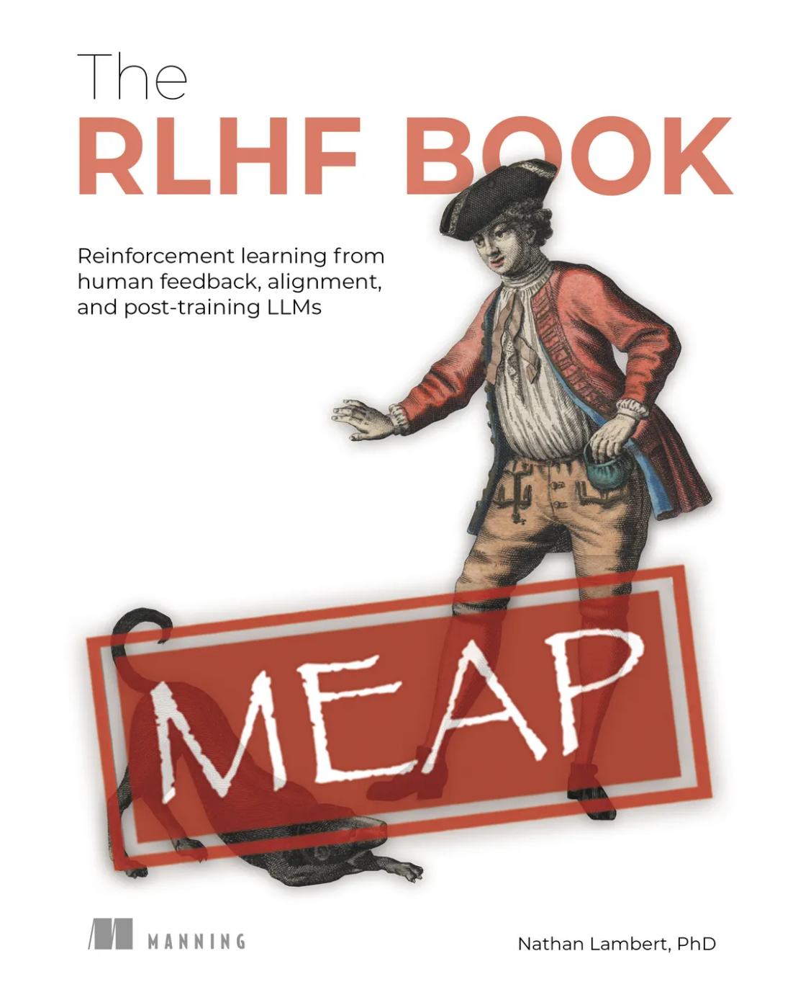

The RLHF Book
Reinforcement Learning from Human Feedback
开始阅读目录
- •copyright
- •Welcome
- Ch 1Overview
- Ch 2A Tiny History of RLHF
- Ch 3Training Overview
- Ch 4Instruction Fine-tuning
- Ch 5Reward Modeling
- Ch 6Reinforcement Learning
- Ch 7Reasoning & Inference-Time Scaling
- Ch 8Direct Alignment Algorithms
- Ch 9Rejection Sampling
- Ch 10The Nature of Preferences
- Ch 11Preference Data
- Ch 12Synthetic Data
- Ch 13Tool Use & Function Calling
- Ch 14Style and Information
- Ch 15Regularization
- Ch 16Over Optimization
- Ch 17Evaluation
- Ch 18Product, UX, and Model Character
- •Appendix A. Definitions
本页面由 TheRLHF.pdf 自动转换生成，共 21 个章节页面。
正文已按移动端阅读重新排版；公式与插图保留原书渲染，以保证嵌套分式与上下标不失真。
点击公式或插图可查看大图。